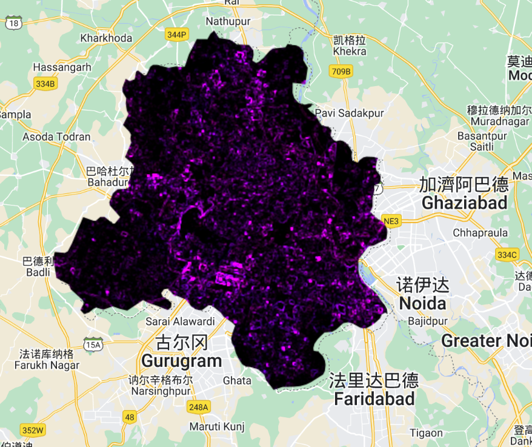
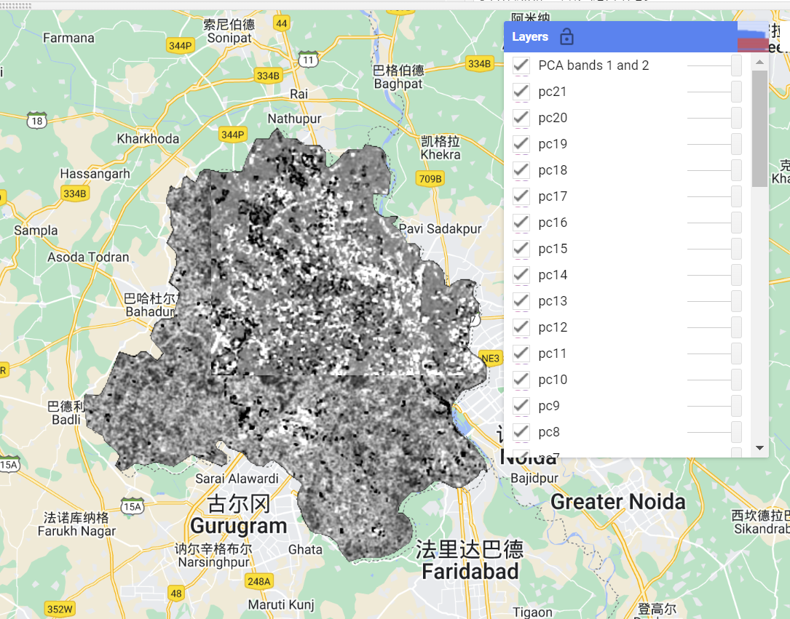
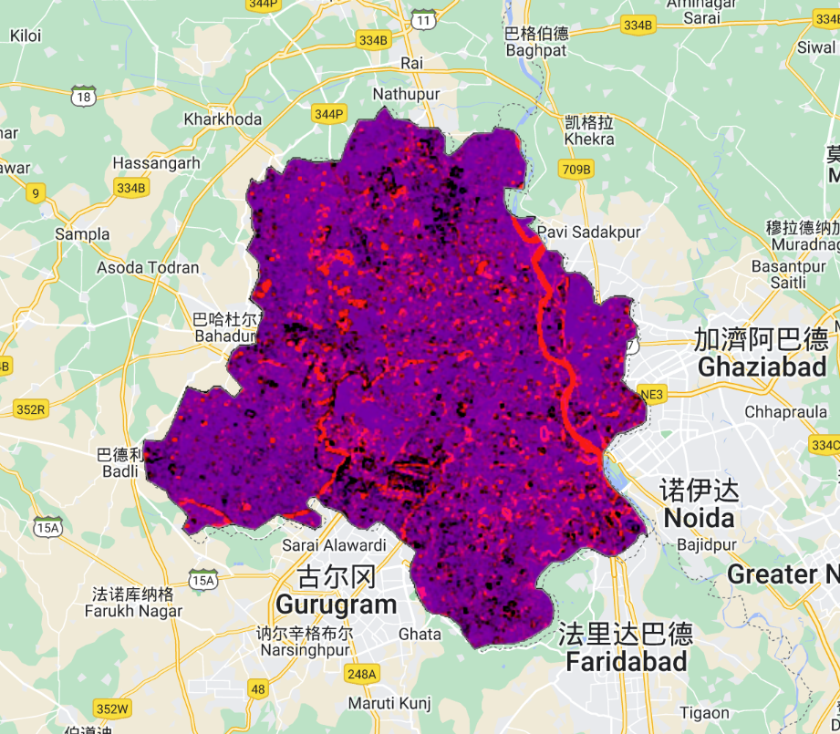

Week5
1 Summary
1.1 GEE
Google Earth Engine (GEE) is an Earth observation data analysis platform for scientists, researchers, and developers that brings together multiple repositories of satellite and ground-based monitoring data and a range of algorithms for data analysis and visualization.GEE provides a programming environment that can be used directly in a browser, allowing users to use languages such as JavaScript or Python to process and analyze large-scale geospatial data. The Google Earth Engine (GEE) offers the possibility of many specific applications covering a wide range of fields such as environmental monitoring, climate change studies, land cover and land use change, water resource management, agricultural development, urban planning, etc. The GEE is a platform for analyzing Earth observation data, a collection of multiple satellite and ground-based monitoring data repositories, and a series of algorithms for data analysis and visualization.GEE also has a massive catalog of data that we can search and load directly into our script.
”
1.2 Image Processing
The image processing methods mentioned in this section are the following three:
One, Processing the scale factor of Landsat surface reflectance products to improve image quality and resolution.
Second, mosaic images, focusing on how to focus on how to visually appear to have a significant gap between the image stitched into a large image. Whether the best solution is to take the average or the median of all overlapping pixels needs to be analysed on a case-by-case basis, and generally speaking the median is better for larger data.
Third, cropping, the image will be cropped to the appropriate shape according to the specific project scope requirements.
1.3 Texture Measurement
Texture measurement is an important technique in image analysis to identify and classify image regions. In the field of remote sensing, texture can be used to help distinguish between different surface features such as urban areas, farmland, forests, and so on. Texture measurement provides a way to quantify the distribution and arrangement of pixel grey values in an image.
In practice, texture measurement usually involves the following steps:
- Gray-Level Co-occurrence Matrix (GLCM, Gray-Level Co-occurrence Matrix): This is a statistical method that analyses texture by calculating the spatial relationship between grey levels in an image.
- Texture Filter: For example, a high pass filter or low pass filter can be used to enhance or smooth the texture of an image.
- Frequency domain analysis: By methods such as Fourier transform, the image is transformed into the frequency domain for analysis to identify the contribution of different frequency components.
Special attention should be paid to the following when performing texture analysis:
- Scale: Texture features may exhibit different characteristics at different scales. It is important to choose the right window size and scale when performing texture analysis. Directionality: Some texture features may have significant directionality, and texture measurements need to be selected or designed to capture this.
- Colour and lighting conditions: Ensuring that the image is not affected by lighting conditions and is properly colour corrected prior to texture analysis may affect the results of the texture measurements.
- Classification and Interpretation: Texture measurements need to be interpreted in relation to actual surface features, so it is important to understand the geographical and environmental context.
”
1.4 PCA
In Google Earth Engine (GEE), Principal Component Analysis (PCA) is a powerful tool often used for dimensionality reduction, feature extraction, and data compression of remotely sensed data. It does this by transforming the data to a new coordinate system such that the data has the largest variance in the direction of the first principal component, with each subsequent principal component having the next largest variance and being orthogonal to the previous component. In remote sensing, this can help to highlight differences between pixels and is often used to enhance certain features in an image or to reduce redunda nt information in the data.
Here are the results of PCA in practical
 
2 Applications
GEE is widely used in a variety of fields such as environmental monitoring, resource management, urban planning, agriculture, and climate change research. Below are some specific GEE application examples that demonstrate its application capabilities in different scenarios:
A. Forest and vegetation monitoring GEE can be used to monitor forest cover changes, vegetation health and ecosystem degradation. By analysing multi-temporal satellite data, researchers can track events such as deforestation, the impact of forest fires and the spread of diseases, providing a scientific basis for ecological protection and natural resource management.
B. Water resources management Using GEE, it is possible to assess changes in water levels in rivers, lakes and reservoirs, monitor drought and flood events, and analyse pollution of water bodies. This is essential for water resources planning, the establishment of disaster early warning systems and improving the efficiency of water quality management.
- Analysis of urban heat island effect Thermal infrared remote sensing data on the GEE platform can be used to identify and analyse the urban heat island effect. By comparing the surface temperature of the city with that of the surrounding rural areas, researchers can assess the effectiveness of urban planning in mitigating the heat island effect, and guide decisions such as urban greening and the selection of building materials.
D, Agricultural applications GEE can be used to monitor crop growth, assess the effects of drought and predict crop yields. By analysing satellite images in different bands, crop health indicators such as Normalised Vegetation Index (NDVI) can be extracted to help farmers optimise irrigation, fertiliser application and pest management.
- Climate change research GEE provides a powerful tool for global warming and climate change research. Scientists can use GEE to analyse trends in glacier retreat, sea level rise, temperature change and extreme weather events, as well as the impact of these changes on biodiversity and human society.
- Disaster response and recovery In the aftermath of a natural disaster, GEE can quickly provide satellite imagery of the affected area to help assess the impact of the disaster, such as the extent of flood inundation, earthquake damage and hurricane impacts. This is very useful for disaster emergency response and recovery planning.
The wide range of applications of GEE is attributed to its ability to handle large amounts of geospatial data, its rich data resources and its highly efficient.
3 Personal Reflections
- Awareness and application reflections on GEE:
GEE offers great potential as a powerful platform for analysing Earth observation data, giving me a deeper understanding of areas such as environmental monitoring and climate change research. Through the ability to process and analyse large-scale geospatial data directly in the browser, I realised the role of data science in solving global problems. The learning curve of GEE was a challenge for me, but also an opportunity to push me to learn new programming languages and techniques. Practically, I learned how to search and load datasets, which was crucial for my project.
- Practical Reflections on Image Processing Methods:
Learning about scale factor processing, image mosaicing and cropping techniques for Landsat surface reflectance products gave me a better understanding of remote sensing image processing. In particular, when performing image mosaics, understanding how to deal with overlapping areas and selecting the best pixel value (mean or median) is of practical significance for improving image quality. When applying these image processing methods, I realise that the balance between accuracy and image quality is crucial. This requires me to pay attention not only to technical details but also to careful quality control and evaluation of the data.
- Reflections on the application of texture measurement and PCA in data analysis:
Texture measurement introduced me to another dimension in image analysis, namely how surface features can be extracted through grey level covariance matrices and texture filters. This was very helpful in improving classification accuracy and understanding changes in ground cover.
Practising PCA gave me a deep understanding of the importance of downscaling and feature extraction. By transforming the data to a new coordinate system, I was able to identify and interpret key information in the remotely sensed data more effectively. This not only enhanced my understanding of the data, but also improved the efficiency of data analysis.
In summary, through the study and practice of GEE, I have gained a more comprehensive understanding of remote sensing data analysis. This has not only enhanced my technical skills, but also made me more aware of the potential of data analysis in solving environmental and social problems. In the future, I hope to continue to learn more about the advanced features of the GEE platform and explore more application scenarios to enhance my research and project development capabilities.